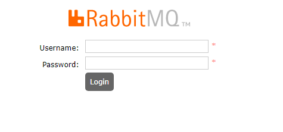
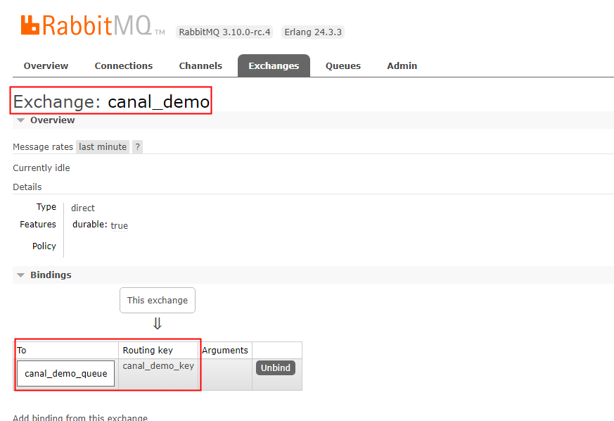
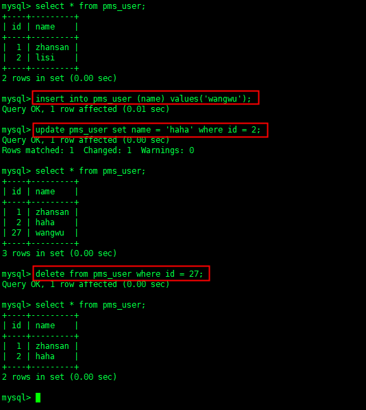
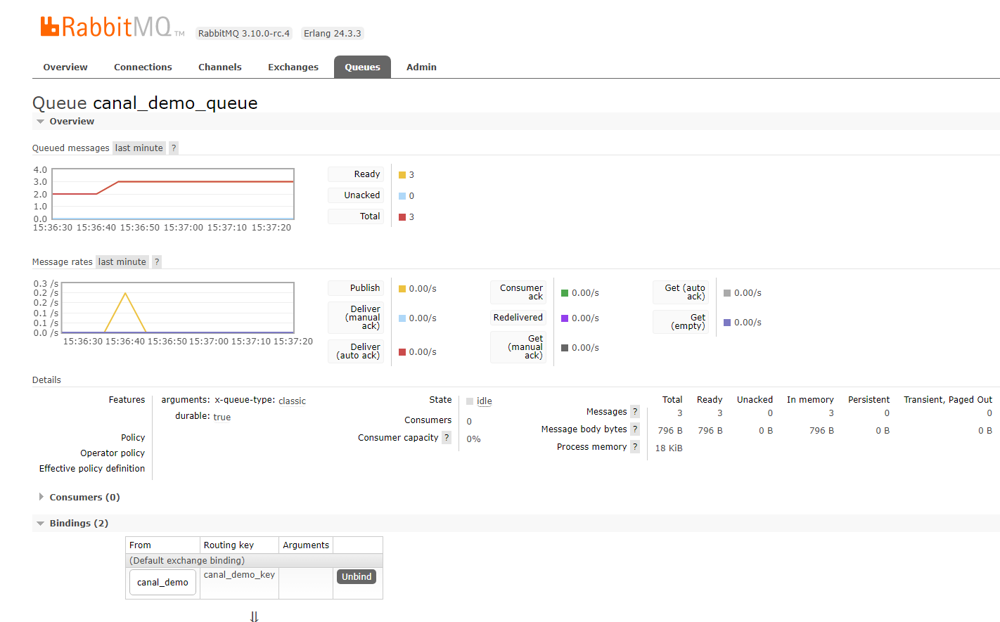
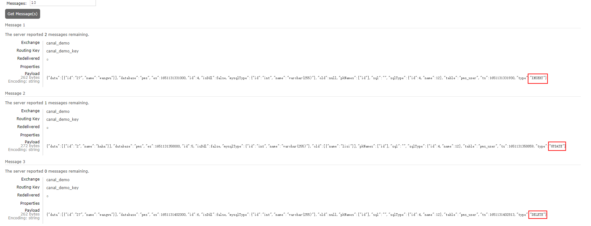

学习目标
- canal是什么
- canal能做什么
- canal的工作原理
- canal搭建和使用
- canal同步数据测试
Canal是什么
Canal 是阿里巴巴开源的同步数据的工具，主要用途是基于 MySQL 数据库增量日志解析，提供增量数据订阅和消费。
Canal能做什么
上面我们说了 Canal 主要用途是基于 MySQL 数据库增量日志解析，提供增量数据订阅和消费，那它具体能做些什么呢，Canal 可以做：
- 数据库镜像
- 数据库实时备份
- 索引构建和实时维护(拆分异构索引、倒排索引等)
- 业务 cache 刷新
- 带业务逻辑的增量数据处理
Canal的工作原理
- canal 模拟 MySQL slave 的交互协议，伪装自己为 MySQL slave ，向 MySQL master 发送dump 协议
- MySQL master 收到 dump 请求，开始推送 binary log 给 slave (即 canal )
- canal 解析 binary log 对象(原始为 byte 流)
canal搭建和使用
准备工作
mysql配置(安装省略)
msyql需要先开启 Binlog 写入功能，配置 binlog-format 为 ROW 模式，my.cnf 中配置如下
1 | [mysqld] |
创建canal用户并授权 canal 链接 MySQL 账号具有作为 MySQL slave 的权限
1 | CREATE USER canal IDENTIFIED BY 'your_password'; |
rabbitmq安装配置(docker)
1 | # 拉取镜像 |
打开浏览器输入 http://ip:15672 ，输入账号密码登录

新增交换机、队列、设置路由key绑定

下载解压
1 | # 下载canal |
目录结构
1 | . |
修改配置文件
配置mysql数据库信息
vim canal-deployer-1.1.5/conf/example/instance.properties
1 | ## mysql serverId |
配置rabbitmq信息
vim canal-deployer-1.1.5/conf/canal.properties
1 | canal.serverMode = rabbitMQ #连接的服务模式 |
启动canal
1 | 启动 |
canal同步数据测试
先查询MySQL用户表数据，然后插入一条数据、更新一条数据、删除一条数据。

查看队列条数，此时有三条数据

查看队列数据内容，分别对应了Mysql操作的增、改、删对应的json数据

至此已经完成将操作数据同步至rabbitmq，后续对队列进行消费作对应的业务处理即可。